Designing a WhatsApp Survey
Learn how to design WhatsApp surveys using Twilio’s Content Template Builder, widgets, and functions. This guide covers creating message templates, building interactive flows, and implementing custom functionality for survey design.

Before starting this guide, ensure you have:
- Completed the Twilio Setup for WhatsApp surveys
- Access to your Twilio Console
- Basic understanding of survey design principles
- Learn to navigate Twilio’s Content Template Builder and create message templates
- Build interactive survey flows using widgets and custom functions
- Implement conditional logic and data collection in your WhatsApp surveys
Content Template Builder in Twilio
The Twilio Content Template Builder allows you to create and manage message templates across multiple Twilio-supported messaging channels, including WhatsApp. This tool provides a unified framework for designing structured messages, ensuring a consistent user experience across platforms while simplifying implementation. You can find this tool in the Twilio Console under the Messaging dropdown, then Senders, and finally Content Template Builder.
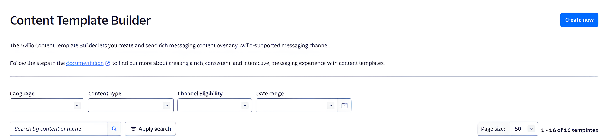
Creating a Content Template
To create a template, go to the Twilio Console and open the Content Template Builder Click **“Create New””
Templates consist of fixed content and dynamic variables, allowing you to personalize messages with user-specific details such as names, order confirmations, or appointment times. When creating a template, you need to provide:
- A template name
- The template language
- The Content type
Message Content Types in Twilio
- text: A standard text message containing only plain text.
- media: A message that includes images, videos, or audio files.
- quick-reply: A message with predefined response buttons for users to select from.
- call-to-action: A message with buttons that direct users to a link or initiate a phone call.
- list-picker: A structured message that presents users with a selectable list of options.
- card: A message format that includes an image, title, description, and optional buttons for interaction.
- card (WhatsApp Card): A WhatsApp-specific card message with rich media and interactive elements.
- authentication: A message type designed for sending authentication codes.
- catalog: A message format for showcasing multiple items in a structured catalog layout.
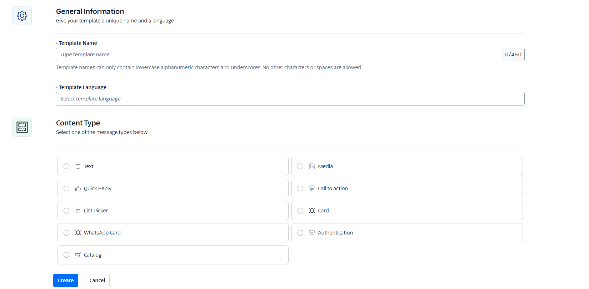
WhatsApp requires all templates to go through a review process before use. Manage your templates using the Content Template Builder. Submit templates for WhatsApp approval, monitor approval statuses, delete, or duplicate your templates.
Using Approved Templates
After approval, content templates can be used to send messages through the Twilio API. The API dynamically replaces template variables with actual values before sending the message. This example shows an approved WhatsApp message with interactive buttons:
Widgets
To create a Twilio flow, follow these steps. First, navigate to the “Studio” section in the main navigation menu. Click on the “Create a Flow” button or the “+” icon to start creating a flow. Provide a name and an optional description for your flow. You will then be taken to the Flow Builder, where you can design your flow visually.
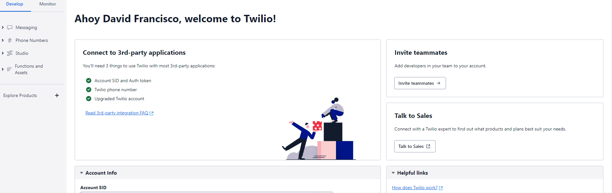
After the flow is created, you can drag widgets from the sidebar onto the canvas to build your flow, connecting them with connectors to define the conversation or logic flow. Customize each widget’s settings according to your requirements. In Twilio messaging, widgets are interactive elements or components that can be used to enhance the user experience and gather information from users. They provide a way to incorporate dynamic and engaging elements within the messaging flow. Widgets are typically used to collect user input, display options, or present interactive content.
The widget library is on the right side of the Flow Builder. Here you can see the four main categories:
- Flow control: These widgets allow you to implement conditional logic and control the flow of a conversation or process, enabling dynamic decision-making based on specific conditions or user inputs.
- Voice: These widgets facilitate the implementation of voice-based interactions, enabling functionalities such as making and receiving phone calls, playing audio prompts, gathering user input through speech recognition, and routing calls to different destinations based on conditions or logic.
- Messaging: These widgets enable the implementation of interactive messaging experiences, allowing functionalities like sending and receiving SMS, WhatsApp, and multimedia messages (MMS), collecting user input, displaying options, and handling conversations in a dynamic and engaging manner.
- Tools and execute code: These widgets provide developers with tools to perform actions like making API requests, executing JavaScript code, accessing external resources, and integrating custom logic into their Twilio applications, allowing for enhanced customization and flexibility in the application’s behavior.
- Connect other products: These widgets facilitate seamless integration with external services and products, enabling developers to incorporate functionalities from other platforms, such as customer relationship management (CRM) systems, databases, or third-party APIs, into their Twilio applications, expanding the capabilities and possibilities of their communication workflows.
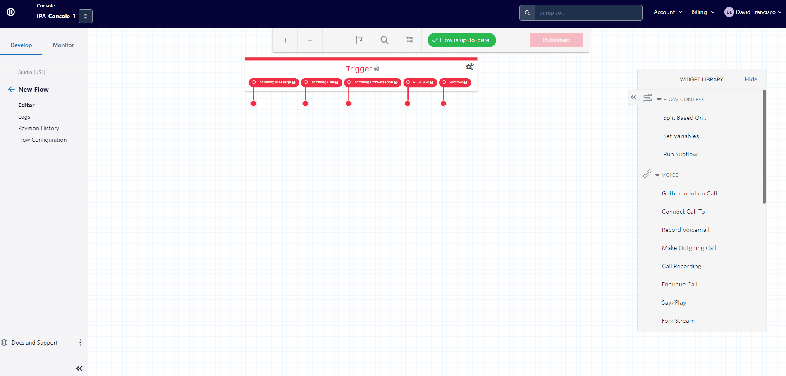
Trigger Widget
In Twilio Studio, the “Trigger” widget is a crucial component with specific functionality. The Trigger widget initiates the execution of a Twilio Studio flow. This is how it works:
- Entry Point: The Trigger widget serves as the entry point of your Studio flow. When an event or condition occurs that should start the flow, the Trigger widget is activated.
- Event-Based Start: The Trigger widget is often configured to start the flow based on a specific event, such as an incoming call, message, or any other trigger you define.
- Connectivity to External Systems: The Trigger widget can also be connected to external systems or services using Twilio Functions or other Twilio products. For example, you might use a Trigger to initiate a flow when receiving a webhook.
- Custom Triggers: Additionally, you can use custom triggers to initiate a flow. This involves setting up conditions within your application or system that, when met, send a request to Twilio to trigger the associated Studio flow.
- Handling Incoming Communication: Common use cases involve using the Trigger widget to handle incoming communication, such as an incoming call or message, and then guiding the flow through subsequent widgets to provide responses or perform specific actions.
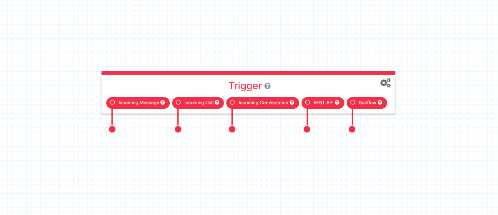
Messaging Widgets
There are two widgets in this section: the “Send Message” and “Send and Wait for Reply” widgets. These are used for displaying content in the survey.
- Send Message widget: This feature allows you to send outbound messages to recipients using various channels, including SMS, WhatsApp, or other messaging services. By specifying the content, it enables efficient and personalized communication with users. The Send Message widget in Twilio establishes a unidirectional connection, where the system sends a message to a recipient without waiting for or expecting a response. It is primarily used for one-way notifications, alerts, or information dissemination.
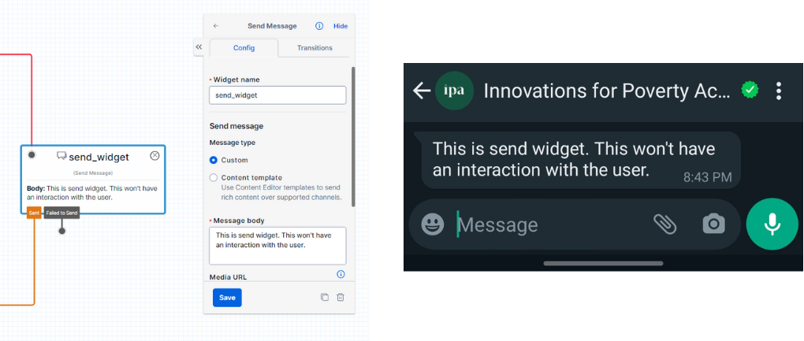
- Send and Wait for Reply widget: This feature allows you to send a message to a recipient and pause the flow, waiting for their response. You can specify the message content, and the flow will wait for the recipient to reply before proceeding. This facilitates interactive and dynamic conversations involving back-and-forth communication with users. The Send and Wait for Reply widget establishes a bidirectional connection, enabling interactive conversations and allowing for dynamic communication between the system and the user.
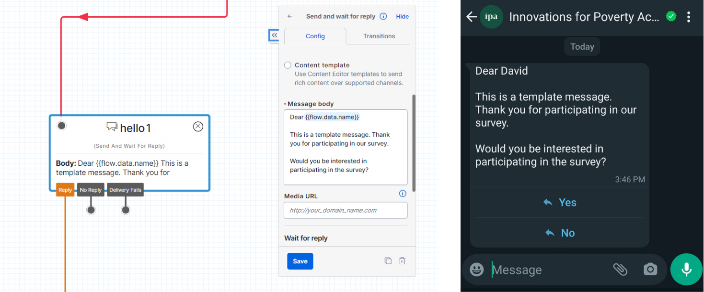
In summary, the key distinction lies in the type of connection established by these widgets. The Send Message widget operates with a unidirectional connection for one-way messaging, while the Send and Wait for Reply widget establishes a bidirectional connection to enable interactive conversations by awaiting and processing user responses.
Flow Control Widgets
There are three widgets in this section: the “Split Based On,” “Set Variable,” and “Run Subflow” widgets. These widgets allow you to implement conditional logic and control the flow of a conversation or process, enabling dynamic decision-making based on specific conditions or user inputs.
- Split Based On: This widget enables you to dynamically split the flow of your application based on specific conditions or logic. It allows you to define multiple paths or branches within your flow, each with its own set of conditions and actions. When a message or event reaches the Split Based On widget, you can configure it to evaluate certain criteria, such as user input, variables, or data from previous steps in the flow. Based on the evaluation, the widget routes the flow to the appropriate branch that matches the condition. This widget is useful for implementing decision-making logic within your application. It enables you to create different paths or outcomes based on specific conditions, providing a way to customize the user experience, handle different scenarios, and route conversations accordingly. In this example, the system evaluates if the participant replied with a Yes or a No.
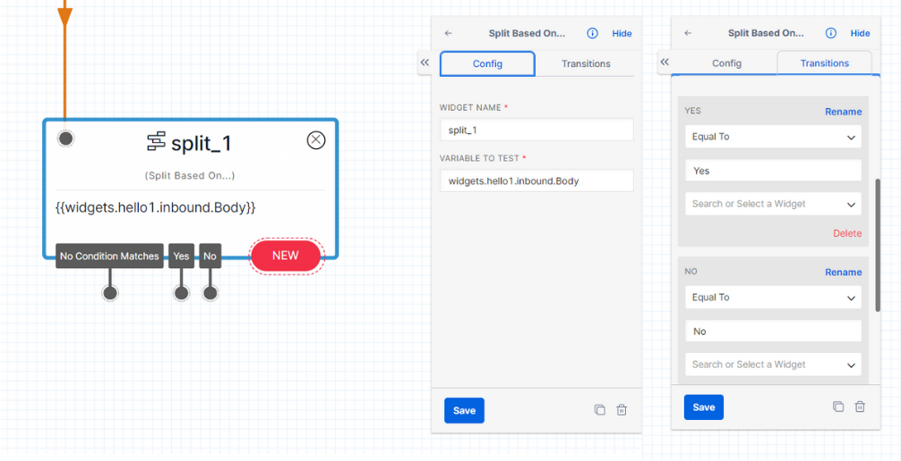
- Set Variable: This widget enables the creation and assignment of variables within an application’s flow. By defining variable names and assigning values to them, developers can store and manipulate data throughout the conversation or process. These values can be constants, dynamic inputs from users or system data, or the result of calculations. The variables can then be referenced and utilized in subsequent steps of the flow, allowing for personalized and dynamic interactions. The Set Variable widget empowers developers to manage and track information, perform calculations, and make conditional decisions based on the stored values, enhancing the flexibility and customization of Twilio applications. In this case, you create a dummy variable that will take a value of 1 when the user replies with a Yes.
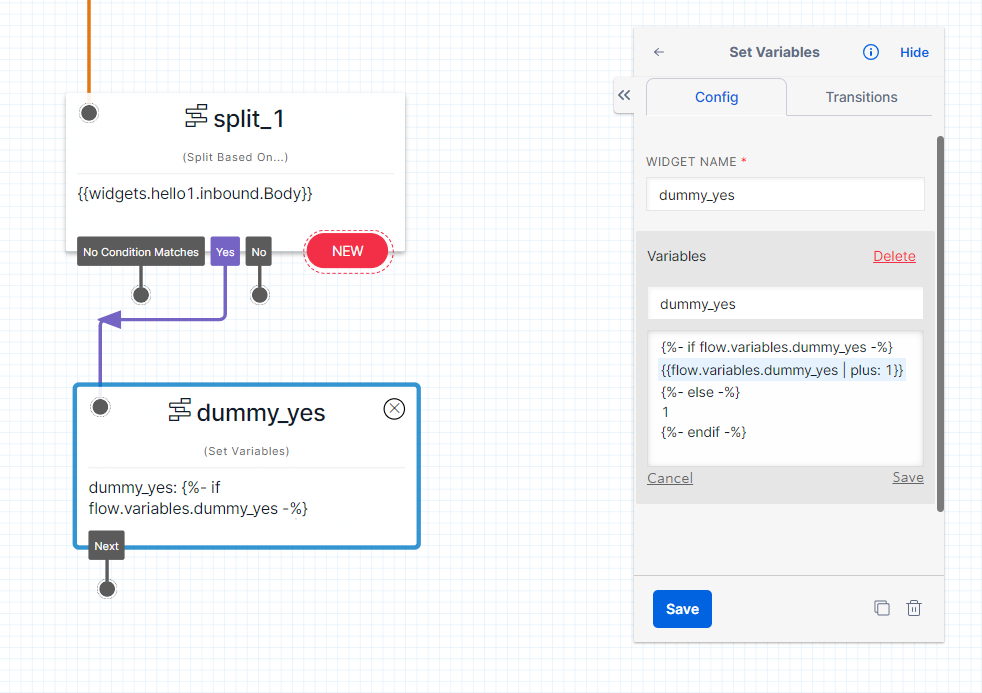
- Run Subflow: This widget enables the execution of separate and reusable subflows within the main flow of an application. By invoking a specific subflow and providing necessary input parameters, developers can modularize complex logic or functionality. This promotes code reusability, simplifies maintenance, and enhances flow organization. Upon executing the subflow, the control returns to the main flow, allowing for seamless integration and continuation of the application’s logic. The Run Subflow widget empowers developers to create more efficient and manageable Twilio applications by encapsulating and invoking reusable subflows as needed. In this case, you tell Twilio to send a user to a different flow (or survey) based on their answer.
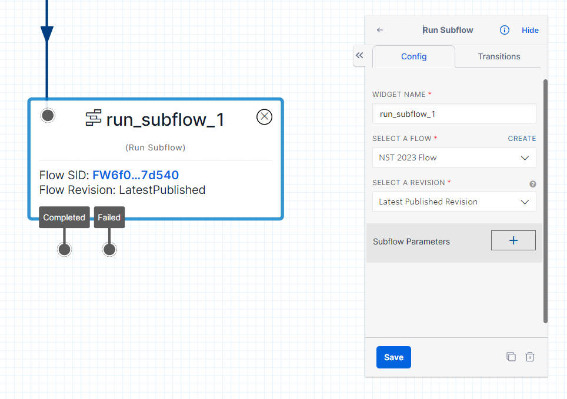
In summary, the Split Based On widget enables branching based on conditions, the Set Variable widget transitions linearly with variable assignments, and the Run Subflow widget transitions back to the main flow after executing the separate subflow. You can see how they look in the following image.
Function Widgets
- Run Function widget: This feature provides a powerful capability to execute custom code or serverless functions within your Twilio application. By utilizing this widget, you can perform specific actions, implement custom logic, and seamlessly integrate external functionality into your Twilio Studio flow. Whether you need to make API calls, perform calculations, access external resources, or implement complex business logic, the “Run Function” widget enhances the capabilities of your Twilio application, allowing you to extend its functionality and customize its behavior according to your unique requirements. This example uses a function that waits a few seconds between questions or messages. This is useful when you want to make the survey feel more natural and have a more human-like interaction with the user.
Functions
There are three widgets in this section: the “Run Function,” “Make HTTP Request,” and “Add TwiML Redirect” widgets. This section focuses only on the “Run Function” widget.
To leverage functions in Twilio, you can write them in JavaScript or any supported language of your choice. These functions can be triggered within a Twilio Studio flow using either the “HTTP Request” or “Run Function” widgets. By incorporating the “Run Function” widget, you can execute custom code or serverless functions, enabling you to perform specific actions and implement customized logic tailored to your Twilio application. This integration of functions seamlessly merges external functionality, enhancing the capabilities of your Twilio Studio flow and empowering you to create dynamic and powerful communication experiences.
Wait Function
The Wait function creates a pause in the flow execution, allowing for a more natural experience for the respondent. By introducing pauses between questions or messages, the Wait function gives respondents sufficient time to read and comprehend lengthy text in the survey. This helps to ensure a smooth and user-friendly survey interaction, allowing respondents to fully engage with the content and provide thoughtful responses. Let’s create this function in Twilio.
- Navigate to Functions and Assets: Go to the Twilio Console and locate the “Functions and Assets” section.
- Access the Services Tab: Within “Functions and Assets,” click on the “Services” tab to manage your services.
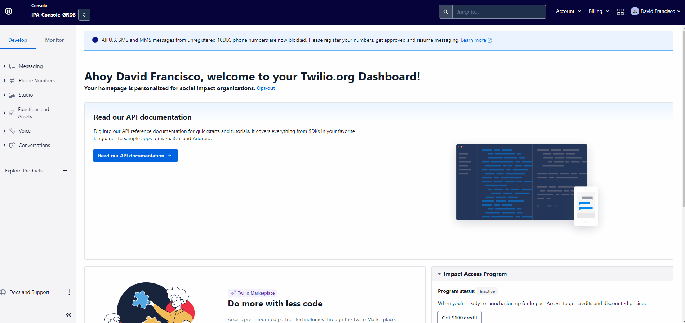
- Create a Service: Click on the option to create a service. Name this service “functions.”
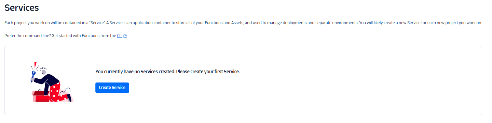
- Create a Function: Inside the “functions” service, select the option to create a function.
- Name the Function: When prompted to name the function, enter “wait.”
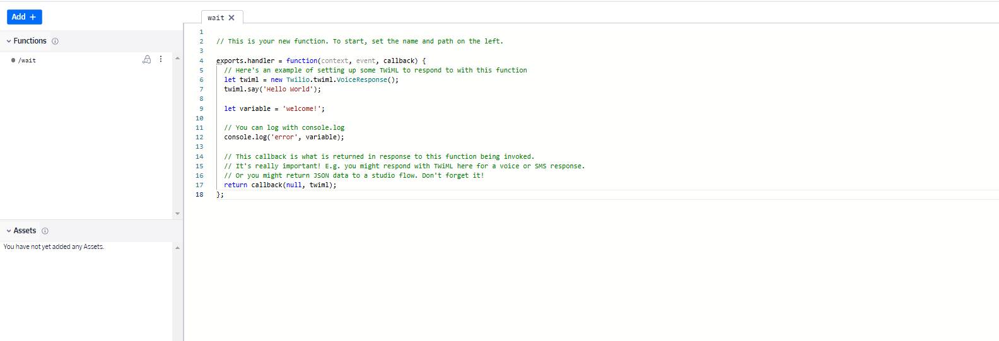
- Paste the Code: Within the “wait” function, paste the following lines of code.
exports.handler = function(context, event, callback) {
setTimeout(function() {
return callback(null, null);
}, 1000);
};- Save the Function: Save the function after pasting the code to preserve your changes.
- Dependencies: Click on the dependency configuration and select the “Node.js v16” option.
- Deploy the Service: After the function is saved, deploy the entire service to make the changes effective.
By following these steps, you’ll successfully create a Wait function inside the Twilio platform.
GSheet Publish Function
The GSheet Publish function in Twilio facilitates the transmission of participant responses to a Google Sheet, enabling you to track and manage the collected data. By utilizing this function, the responses provided by participants are seamlessly sent to a designated Google Sheet, ensuring easy access to the data for analysis and tracking purposes. This functionality streamlines the process of gathering and organizing responses, allowing you to efficiently monitor and manage the collected information within a familiar spreadsheet format.
This function is covered in detail in the WhatsApp Survey Deploy guide.
Encrypt Function
The Encrypt function is designed to encrypt variables, ensuring that sensitive information, such as personally identifiable information (PII), remains secure when data is stored or published. By encrypting the variables, the values are transformed into a secure format, protecting them from unauthorized access or exposure. This functionality is crucial for safeguarding sensitive information and maintaining the privacy and confidentiality of user data within the server. The Encrypt function provides a robust layer of security to prevent the public disclosure of sensitive data.
This function is covered in detail in the WhatsApp and Data Security guide.
Next Steps
After designing your WhatsApp survey, you’ll want to:
- Deploy your survey: Follow the WhatsApp Survey Deploy guide to launch your survey
- Implement security measures: Review the WhatsApp and Data Security guide for data protection
- Monitor responses: Set up data collection and monitoring systems
For more information about WhatsApp surveys, see the About WhatsApp Surveys overview.